Chapter 3 Workflow Analysis
In the previous chapters, we learned to organize all our files and data in a well structured and documented repository. Moreover, we learned how to write readable and maintainable code and to use Git and GitHub for tracking changes and managing collaboration during the development of our project.
At this point, we have everything we need to run our analysis. In this chapter, we discuss how to manage the analysis workflow to enhance results reproducibility and code maintainability.
3.1 Reproducible Workflow
To enhance results reproducibility we need to establish a workflow that will allow other colleagues to easily run the analysis. First, we describe how to organize the code used to run the analysis. Next, we discuss the importance of appropriate documentation and common issues related to results reproducibility. Finally, we discuss workflow management tools used to create specific pipelines for running our analysis. These tools allow us to improve the analysis maintainability during the project development.
3.1.1 Run the Analysis
In Chapter ??, we introduced the functional style approach that allows us to organize and develop the code required for the analysis very efficiently. In summary, instead of having a unique script, we define functions to execute each analysis step breaking down the code into small pieces. These functions are defined in separate scripts and subsequently used in another script to run the analysis.
Therefore, in our project we can organize our scripts into two different directories:
analysis/: A directory with the scripts needed to run all the steps of the analysis.code/: A directory with all the scripts in which we defined the functions used in the analysis.
But how can we organize the scripts used to run the analysis? Well, of course, this will depend on the complexity of the analysis and its specific characteristics. However, let’s see some general advice:
- Single Script. If the analysis is relatively short and straightforward, we can simply collect everything in a single script. Using the functions defined elsewhere, we specify all the analysis steps in the required order. To run the analysis, we execute the script line by line in the given order (from top to bottom).
- Multiple Scripts. When the analysis is very long or composed of different distinct steps, it is preferable to break down the analysis into different scripts. In this way, each script is used to run a specific part of the analysis. A good idea is to name each script with an auto-descriptive name preceded by a progressive number (e.g.,
xx-<script-goal>). Auto-descriptive names allow us to easily understand the aim of each script, whereas progressive numbers indicate the required order in which scripts should be executed. As later scripts may rely on results obtained in previous ones, it is necessary to run each script in the required order one at a time. - Main Script. In the case of complex analysis with multiple scripts, it may be helpful to define an extra script to manage the whole analysis run. We can name this special script
mainand use it to manage the analysis by running the other scripts in the required order and dealing with other workflow aspects (e.g., settings and options). By doing this, we can run complex analyses following a simple and organized process.
Following these general recommendations, we obtain a well-structured project that allows us to easily move between the different analysis parts and reproduce the results. As a hypothetical example, we could end up having a project with the following structure.
- my-project/
|
|-- analysis/
| |-- 01-data-preparation
| |-- 02-experiment-A
| |-- 03-experiment-B
| |-- 04-comparison-experiments
| |-- 05-sensitivity-analysis
| |-- main
|-- code/
| |-- data-munging
| |-- models
| |-- plots-tables
| |-- utils3.1.2 Documentation
Independently of the way we organize the scripts used to run the analysis, it is important to always provide appropriate documentation. This includes both comments within the scripts to describe all the analysis steps and step-by-step instructions on how to reproduce the analysis results.
Comments Analysis Steps. In Chapter ??, we described general advice on how to write informative comments for the code. In summary, comments should explain “why” rather than “what”. However, as we are commenting on the analysis steps rather than the code itself, in this case, it is also important to clearly describe “what” we are doing in the different analysis steps.
Of course, we still need to provide information about the “why” of particular choices. However, specific choices during the analysis usually have theoretical reasons and implications that could be better addressed in a report (supplemental material or paper) used to present the results. Ideally, comments should describe the analysis steps to allow colleagues (not familiar with the project) to follow and understand the whole process while reading the analysis scripts.
Instructions Analysis Run. Step-by-step instructions on how to run the analysis are usually provided in the
READMEfile. We need to provide enough details to allow colleagues (not familiar with the project) to reproduce the results.
Documenting the analysis workflow is time-consuming and therefore an often overlooked aspect. However, documentation is extremely important as it allows other colleagues to easily navigate around all the files and reproduce the analysis. Remember, this could be the future us!
3.1.3 Reproducibility Issues
A well structured and documented analysis workflow is a big step toward results reproducibility. However, it is not guaranteed that everyone will obtain the exact same results. Let’s discuss some aspects that could hinder result reproducibility.
Random Number Generator. During the analysis, some processes may require the generation of random numbers. As these numbers are (pseudo-) random, they will be different at each analysis run. For this reason, we could obtain slightly different values when reproducing the results. Fortunately, programming languages provide ad-hoc functions to allow reproducibility of random numbers generation. We should look at the specific functions documentation and adopt the suggested solutions. Usually, we need to set the seed for initializing the state for random number generation.
Session Settings. Other global settings related to the specific programming language may affect the final results. We need to ensure that the analysis is run using the same settings each time. To do that we can specify the required options directly in the analysis script as code lines to be executed.
Project Requirements. Other elements such as operating system, specific software version, and installed libraries could affect the analysis results. In Chapter ?? and Chapter ??, we discuss how to manage project requirements to guarantee results reproducibility.
3.1.4 Workflow Manager
At this point, we would like something to help us manage the workflow. In particular, we need a tool that allows us to:
- Automatically Run the Analysis. Ideally, we should be able to run the whole analysis in a single click (or better a single command line), following a pre-defined analysis pipeline.
- Discover Dependencies. Tracking the dependencies between the different analysis parts allows for identifying the objects that are affected by changes or modifications in the code.
- Update the Analysis. Following changes in the analysis (or when new analysis parts are added), results should be updated computing only the outdated dependencies (or the new objects) that were affected by the changes made. In this way, we avoid re-running unnecessary analysis parts, optimizing the required time.
- Caching System. Saving copies of the intermediate and final analysis objects so they can be used later avoiding to re-run the analysis at each session.
A manager tool with these characteristics is particularly useful during the project development, allowing a very smooth workflow. In Section 3.1.4.1, we introduce Make, a Unix utility that allows us to automate tasks execution for general purposes. In Section 3.3, we present specific solutions for the R programming language.
3.1.4.1 Make
Make is a Unix utility that manages the execution of general tasks. It is commonly used to automatize packages and programs installation, however, it can be also used to manage any project workflow. In Windows, an analogous tool is NMake (see https://docs.microsoft.com/en-us/cpp/build/reference/nmake-reference)
Make has several powerful features. In particular, it allows us to define dependencies between the different project parts and it automatically figures out which files to update following changes or modifications. Moreover, Make is not limited to a particular language but it can be used for any purpose. See official documentation for more details https://www.gnu.org/software/make/.
Make requires a Makefile (or makefile) where all the tasks to be executed are defined. Makefile has its own syntax that is beyond the aim of the present book. Interested readers can refer to this tutorial for a general introduction to Make https://opensource.com/article/18/8/what-how-makefile.
Ideally, we could create a Makefile with all the details and use Make to automatize the analysis workflow. This would be very useful but it requires some extra programming skills. In Section 3.3, we introduce alternative tools specific to the R programming language. However, Make may still be the choice to go if we need to integrate multiple programs into the workflow or for more general purposes.
3.2 R
Now we discuss how to manage the analysis workflow specifically when using the R programming language. First, we consider some general recommendations and how to solve possible reproducibility issues. Next, we describe the main R-packages available to manage the analysis workflow.
3.2.1 Analysis Workflow
In Chapter ??, we discussed how to create our custom functions to execute specific parts of the analysis. Following the R-packages convention, we store all the .R scripts with our custom functions in the R/ directory at the root of our project.
Now, we can use our custom functions to run the analysis. We do that in separate .R scripts saved in a different directory named, for example, analysis/. Of course, during the actual analysis development, this is an iterative process. We continuously switch between defining functions and adding analysis steps. It is important, however, to always keep the scripts used to run the analysis in a separate directory from the scripts with our custom functions:
analysis/: Scripts to run the analysis.R/: Scripts with function definitions.
Considering the previous example, we would have a project with the following structure.
- my-project/
|
|-- analysis/
| |-- 01-data-preparation.R
| |-- 02-experiment-A.R
| |-- 03-experiment-B.R
| |-- 04-comparison-experiments.R
| |-- 05-sensitivity-analysis.R
| |-- main.R
|-- R/
| |-- data-munging.R
| |-- models.R
| |-- plots-tables.R
| |-- utils.R3.2.1.1 Script Sections
To enhance the readability of the analysis scripts, we can divide the code into sections. In RStudio, it is possible to create sections adding at the end of a comment line four (or more) consecutive symbols #### (alternatively, ---- or ====).
# Section 1 ####
# Section 2 ----
#---- Section 3 ----
#### Not Valid Section --##Using the available characters, it is possible to create different styles. The important thing is to finish the line with four (or more) identical symbols. As an example, we could organize our script as presented below
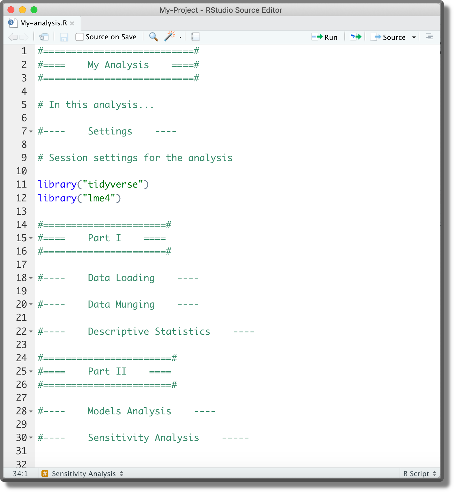
One of the advantages of organizing our script into sections is that at the top right corner we can find a navigation menu with the document outline. Section titles are given by the comment text.
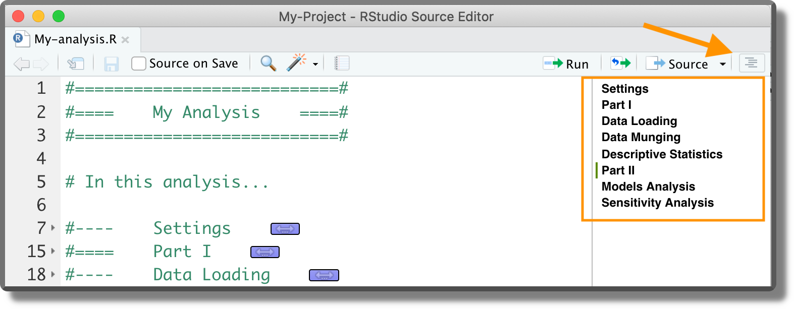
Another navigation bar is also available at the bottom left corner.
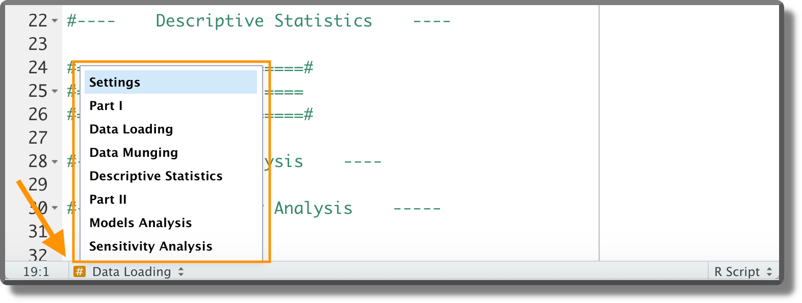
Dividing the code into sections enhances readability and helps us to navigate between the different analysis parts. However, we should avoid creating too long scripts as they are more difficult to maintain.
Note that next to the code line number, small arrows are now displayed. These arrows allow us to expand/collapse code sections.
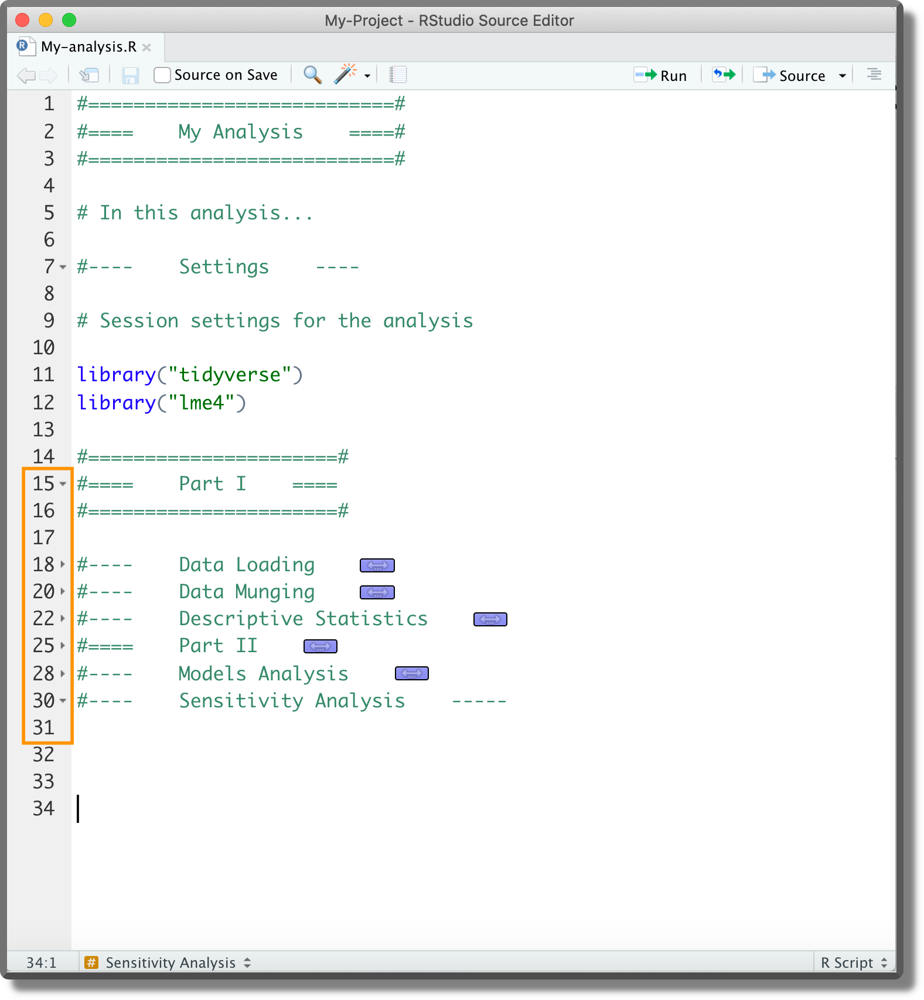
3.2.1.2 Loading Functions
As we have defined our custom functions in separate scripts, before we can use them, we need to load them in our session environment. To do that we have two different solutions:
source(). This function allows us to read code from R scripts, see?source()for options and details. Assuming all the required scripts are in theR/directory in the project root, we can use the following code lines to list all available scripts and source them:# List all scripts in R/ script_list <- list.files("R", full.names = TRUE) # Source scripts invisible(sapply(script_list, source))devtools::load_all(). We briefly introduced thedevtoolsR package in Chapter ??. This package provides many useful functions that facilitate our workflow when using the R-package project template (remember that theDESCRIPTIONfile is required). The functiondevtools::load_all()allows us to automatically source all scripts in theR/directory. See?devtools::load_all()for options and details. We can usedevtools::load_all()in our analysis script specifying as argument the path to the project root where theDESCRIPTIONfile is present.# Load functions devtools::load_all(path = "<path-to-the-project-root>")The keyboard shortcut
Ctrl/Cmd + Shift + Lis also available. This is very handy during the analysis development as it facilitates the common workflow:- Write a new function
- Save the script
- Load all functions with
Ctrl/Cmd + Shift + L - keep working on the analysis
We should include the code snippet used to load our custom functions at the beginning of the analysis scripts. Alternatively, we can include it in the .Rprofile to automatically load all functions at the beginning of each session. The latter approach, however, may lead to some problems. In particular, it limits the code readability as colleagues not familiar with the .Rprofile could not understand what is going on. Moreover, .Rprofile is not always automatically sourced when compiling dynamic documents. When compiling a document using the Knit button in Rstudio, a separate R session is launched using as working directory the document location. If this is not the project root (where the .Rprofile is located), the .Rprofile is not sourced.
Therefore, declaring the code snippet used to load our custom functions in the analysis scripts (or in the Rmarkdown file) following a more explicit approach is preferable (see “Trick-Box: Using .Rprofile” below for a good tip).
A good tip is to use the .Rprofile to run all commands and set options required to work on the analysis development. By doing this we can automate all those processes routinely done at the beginning of each session allowing us to jump straight into the development workflow without wasting time.
Common routine processes are loading our custom functions, loading required packages, and specifying preferred settings. For example, a possible .Rprofile may look like,
#---- .Rprofile ----#
# Load custom functions
devtools::load_all()
# Load packages
library("tidyverse")
library("lme4")
# Settings ggplot
theme_set(theme_bw())The actual analysis run, however, should rely only on the code declared explicitly in the analysis script. This would facilitate the analysis readability for colleagues not familiar with more advanced R features and avoid possible problems related to the creation of new R sessions (as in the case of dynamic documents compilation).
Note, however, that if we run the analysis script in our current session, the commands specified in the .Rrofile are still valid. To manage separately the session where we develop the analysis from the session where the analysis is run, we can evaluate whether the session is interactive or not. By specifying,
#---- .Rprofile ----#
# Commands for interactive and non-interactive sessions
...
# Commands only for interactive sessions
if(interactive()){
# Load custom functions
devtools::load_all()
# Load packages
library("tidyverse")
library("lme4")
# Settings ggplot
theme_set(theme_bw())
}commands defined inside the if(interactive()){} block are executed only in interactive sessions (usually when we develop the code). Note that commands defined outside the if(interactive()){} block will be always executed.
To run the analysis in a non-interactive session, we can run the script directly from the terminal (not the R console!) using the command,
$ Rscript <path-to/script.R>For further details about running R in non-interactive mode, see https://github.com/gastonstat/tutorial-R-noninteractive. Note that using the Knit button in Rstudio (or using the targets workflow to run the analysis; see Section 3.3) automatically runs the code in a new, non-interactive session.
3.2.1.3 Loading R-packages
During our analysis, we will likely need to load several R packages. To do that, we can use different approaches:
- Analysis Scripts. We can declare the required packages directly at the beginning of the analysis scripts. The packages will be loaded when running the code.
.Rprofile. Declaring the required packages in the.Rprofile, we can automatically load them at the beginning of each session.DESCRIPTION. When using the R-package project template, we can specify the required packages in theDESCRIPTIONfile. In particular, packages listed in theDependsfield are automatically loaded at the beginning of each session. See https://r-pkgs.org/namespace.html?q=depends#imports for further details.
As in the case of loading custom functions (see Section 3.2.1.2), it is preferable to explicitly declare the required packages in the analysis scripts. This facilitates the analysis readability for colleagues not familiar with the .Rprofile and the DESCRIPTION file functioning. However, the .Rprofile (and the DESCRIPTION file) can still be used to facilitate the workflow during the analysis development (see “Trick-Box: Using .Rprofile” above).
Another aspect to take into account is the presence of conflicts among packages. Conflicts happen when two loaded packages have functions with the same name. In R, the default conflict resolution system is to give precedence to the most recently loaded package. However, this makes it difficult to detect conflicts and can waste a lot of time debugging. To avoid package conflicts, we can:
conflicted. The R packageconflicted(Wickham, 2021) adopts a different approach making every conflict an error. This forces us to solve conflicts by explicitly defining the function to use. See https://conflicted.r-lib.org/ for more information.<package>::<function>. We can refer to a specific function by using the syntax<package>::<function>. In this case, we are no longer required to load the package with thelibrary("<package>")command avoiding possible conflicts. This approach is particularly useful if only a few functions are required from a package. However, not that not loading the package prevents also package-specific classes and methods from being available. This aspect could lead to possible errors or unexpected results. See http://adv-r.had.co.nz/OO-essentials.html for more details on classes and methods.
Common conflicts to be aware of are:
dplyr::select()vsMASS::select()dplyr::filter()vsstats::filter()
3.2.1.4 Reproducibility
Finally, let’s discuss some details that may hinder result reproducibility:
- Random Number Generator. In R, using the function
set.seed()we can specify the seed to allow reproducibility of random numbers generation. See?set.seed()for options and details. Ideally, we specify the seed at the beginning of the script used to run the analysis. Note that functions that call other software (e.g.,brms::brm()orrstan::stan()which are based on Stan) may have their ownseedargument that is independent of the seed in the R session. In this case, we need to specify both seeds to obtain reproducible results. - Global Options. If our project relies on some specific global options (e.g,
stringsAsFactorsorcontrasts), we should define them explicitly at the beginning of the script used to run the analysis. See?options()for further details. Note that we could also specify global options in the.Rprofileto facilitate our workflow during the analysis development (see “Trick-Box: Using .Rprofile” above). - Project Requirements. To enhance results reproducibility, we should use the same R and R packages versions as in the original analysis. In Chapter ??, we discuss how to manage project requirements.
We recommend creating a section “Settings” at the top of the main script where to collect the code used to define the setup of our analysis session. This includes:
- Loading required packages
- Setting required session options
- Defining the random seed
- Defining global variables
- Loading custom functions
3.2.2 Workflow Manager
In R, two main packages are used to create pipelines and manage the analysis workflow facilitating the project maintainability and enhancing result reproducibility. These packages are:
targets(https://github.com/ropensci/targets). Thetargetspackage (Landau, 2022b) creates a Make-like pipeline.targetsidentifies dependencies between the analysis targets, skips targets that are already up to date, and runs only the necessary outdated targets. This package enables an optimal, maintainable and reproducible workflow.workflowr(https://github.com/workflowr/workflowr). Theworkflowrpackage (Blischak et al., 2021) organizes the project to enhance management, reproducibility, and sharing of analysis results. In particular,workflowralso allows us to create a website to document the results via GitHub Pages or GitLab Pages.
Between the two packages, targets serves more general purposes and has more advanced features. Therefore, it can be applied in many different scenarios. On the other hand, workflowr offers the interesting possibility of creating a website to document the results. However, we can create a website using other packages with lots more customizable options, such as bookdown (https://github.com/rstudio/bookdown), blogdown (https://github.com/rstudio/blogdown), or pkgdown (https://github.com/r-lib/pkgdown). Moreover, using targets does not exclude that we can also use workflowr to create the website. For more details see https://books.ropensci.org/targets/markdown.html.
In the next section, we discuss in more detail the targets workflow.
3.3 Targets
The targets package (successor of drake) creates a Make-like pipeline to enable an optimal, maintainable and reproducible workflow. Similar to Make, targets identifies dependencies between the analysis targets, skips targets that are already up to date, and runs only the necessary outdated targets. Moreover, targets support high-performance computing allowing us to run multiple tasks in parallel on our local machine or a computing cluster. Finally, targets also provide an efficient cache system to easily access all intermediate and final analysis results.
In the next sections, we introduce the targets workflow and its main features. This should be enough to get started, however, we highly encourage everyone to take a tour of targets official documentation available at https://books.ropensci.org/targets/. There are many more aspects to learn and solutions for possible issues.
3.3.1 Project Structure
To manage the analysis using targets, some specific files are required. As an example of a minimal workflow, consider the following project structure.
- my-project/
|
|-- _targets.R
|-- _targets/
|-- data/
| |-- raw-data.csv
|-- R/
| |-- my-functions.R
| |-- ...Data/raw-data.csv) to analyse,
| ID | x | y |
|---|---|---|
| 1 | A | 2.583 |
| 2 | A | 2.499 |
| 3 | A | -0.625 |
| … | … | … |
and R/My-functions.R with our custom functions to run the analysis. In addition, we need a special R script _targets.R and a new directory _targets/.
3.3.1.1 The _targets.R Script
The _targets.R script is a special file used to define the workflow pipeline. By default, this file is in the root directory (however, we can indicate the path to the _targets.R script and also specify a different name; see Section 3.3.3.1 and ?tarconfig_set() for special custom settings). In this case, the _targets.R script looks like,
#==========================#
#==== _targets.R ====#
#==========================#
library("targets")
#---- Settings ----
# Load packages
library("tidyverse")
library("lme4")
# Source custom functions
source("R/my-functions.R")
# Options
options(tidyverse.quiet = TRUE)
#---- Workflow ----
list(
# Get data
tar_target(raw_data_file, "data/raw-data.csv", format = "file"),
tar_target(my_data, get_my_data(raw_data_file)),
# Descriptive statistics
tar_target(plot_obs, get_plot_obs(my_data)),
# Inferential statistics
tar_target(lm_fit, get_lm_fit(my_data))
)Let’s discuss the different parts:
library("targets"). It is required to load thetargetsR package itself at the beginning of the script (it is only required before the workflow definition, but it is common to specify it at the top).- Settings. Next, we specify required R packages (also by
tar_option_set(packages = c("<packages>")); see https://books.ropensci.org/targets/packages.html), load custom functions, and set the required options. - Workflow. Finally, we define inside a list each target of the workflow. In the example, we indicate the file with the raw data and we load the data in R. Next, we get a plot of the data and, finally, we fit a linear model.
3.3.1.2 Defining Targets
Each individual target is defined using the function tar_target() specifying the target name and the R expression used to compute the target. Note that all targets are collected within a list.
Specifying format = "file", we indicate that the specified target is a dynamic file (i.e., an external file). In this way, targets tracks the file to evaluate whether it is changed. For more details see ?tar_target()
Each target is an intermediate step of the workflow and their results are saved to be used later. targets automatically identifies the dependency relations between targets and updates single targets that are invalidated due to changes made. Ideally, each target should represent a meaningful step of the analysis. However, in case of changes to the code they depend on, large targets are required to be recomputed entirely even for small changes. Breaking down a large target into smaller ones allows skipping those parts that are not invalidated by changes.
3.3.1.3 The _targets/ Directory
targets stores the results and all files required to run the pipeline in the _targets/ directory. In particular, inside we can find:
meta/. It contains metadata regarding the targets, runtimes and processes.objects/. It contains all the targets results.users/. It is used to store custom files
This directory is automatically created the first time we run the pipeline. Therefore, we do not have to care about this directory as everything is managed by targets. Moreover, the entire _targets/ directory should not be tracked by git. Only the file _targets/meta/meta is important. A .gitignore file is automatically added to track only relevant files.
Note that we can also specify a location other than _targets/ where to store the data (see ?tarconfig_set() for special custom settings).
3.3.2 The targets Workflow
At this point, we have everything we need to run the analysis. Let’s start the targets workflow.
3.3.2.1 Check the Pipeline
Before running the pipeline, we can inspect it to evaluate the possible presence of errors. Using the function targets::tar_manifest(), we obtain a data frame with all the targets and information about them. Note that targets are ordered according to their topological order (i.e., the expected order of execution without considering parallelization and priorities). See ?targets::tar_manifest() for further details and options.
tar_manifest(fields = "command")
## # A tibble: 4 × 2
## name command
## <chr> <chr>
## 1 raw_data_file "\"data/raw-data.csv\""
## 2 my_data "get_my_data(raw_data_file)"
## 3 plot_obs "get_plot_obs(data = my_data)"
## 4 lm_fit "get_lm_fit(data = my_data)"We can also use the function targets::tar_visnetwork(), to visualize the pipeline and the dependency relationship between targets. The actual graph we obtain is made by the visNetwork package (we need to install it separately) and it is interactive (try it in RStudio). See ?targets::tar_visnetwork() for further details and options. At the moment, all our targets are outdated.
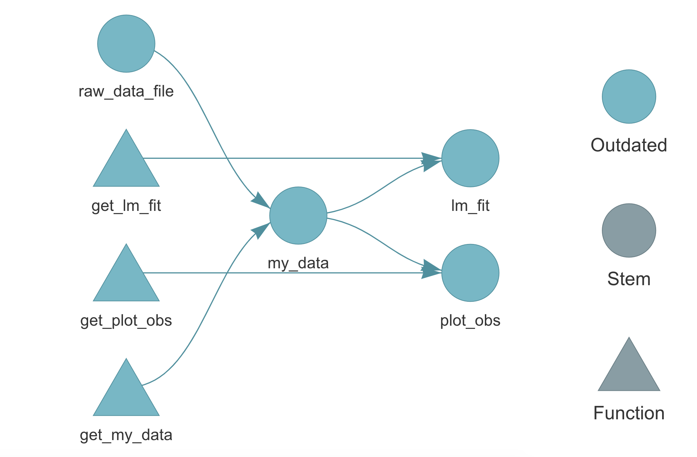
3.3.2.2 Run the Pipeline
Using the function targets::tar_make(), we can run the pipeline. All targets are evaluated in a new external session in the correct order and results are saved in the _targets/ directory. See ?targets::tar_make() for further details and options.
tar_make()
## • start target raw_data_file
## • built target raw_data_file
## • start target my_data
## • built target my_data
## • start target plot_obs
## • built target plot_obs
## • start target lm_fit
## • built target lm_fit
## • end pipelineIf we look again at targets::tar_visnetwork() graph, we can see that now all targets are up to date.
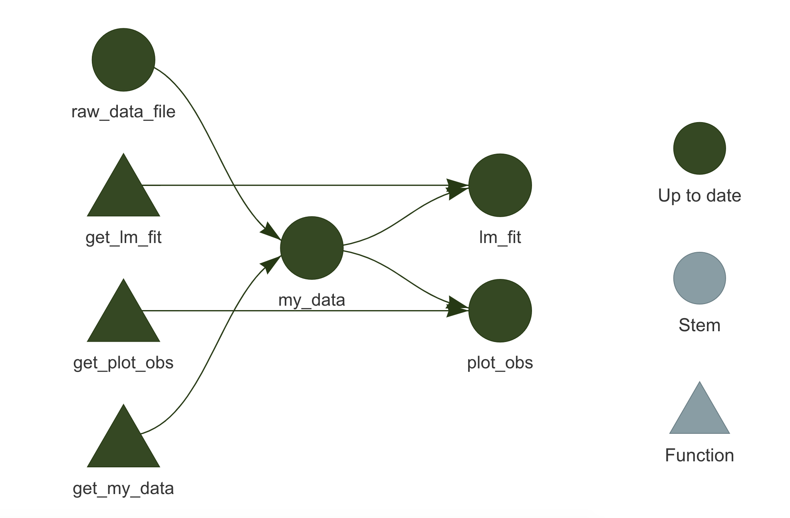
3.3.2.3 Make Changes
Let’s say we make some changes to the function used to fit the linear model. targets will notice that and it will identify the invalidated targets that require to be updated. Looking at the targets::tar_visnetwork() graph, we can see which targets are affected by the changes made.
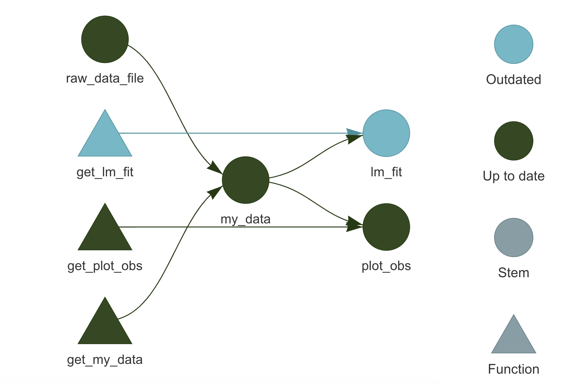
Running targets::tar_make() a second time, we see that up-to-date targets are skipped and only outdated targets are computed again, potentially saving us a lot of time.
tar_make()
## ✔ skip target raw_data_file
## ✔ skip target my_data
## ✔ skip target plot_obs
## • start target lm_fit
## • built target lm_fit
## • end pipelineSuppose, instead, that we made some changes to the raw data (e.g., adding new observations). targets will detect that as well and in this case, the whole pipeline will be invalidated.
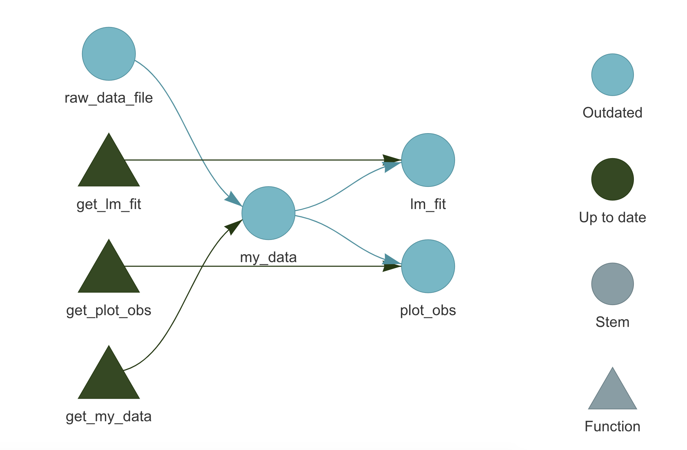
3.3.2.4 Get the Results
To access the targets results, we have two functions:
targets::tar_read(). Read the target from the_targets/directory and return its value.
targets::tar_load(). Load the target directly into the current environment (NULLis returned).
For example, we can use targets::tar_read() to obtain the created plot,
targets::tar_read(plot_obs)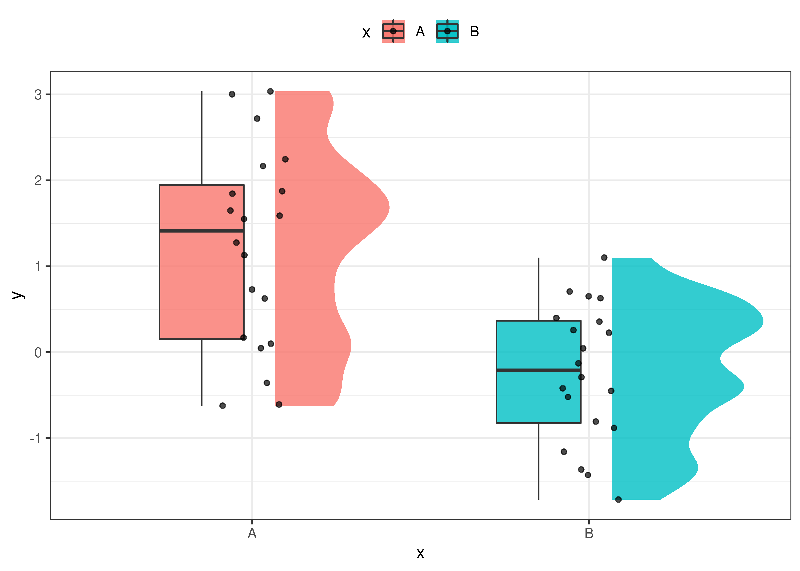
or we can use targets::tar_load() to load a target in the current environment so we can use it subsequently with other functions.
targets::tar_load(lm_fit)
summary(lm_fit)
##
## Call:
## lm(formula = y ~ x, data = data)
##
## Residuals:
## Min 1Q Median 3Q Max
## -1.83060 -0.70935 0.08828 0.64521 1.82840
##
## Coefficients:
## Estimate Std. Error t value Pr(>|t|)
## (Intercept) 1.2076 0.2225 5.428 3.47e-06 ***
## xB -1.4477 0.3146 -4.601 4.58e-05 ***
## ---
## Signif. codes: 0 '***' 0.001 '**' 0.01 '*' 0.05 '.' 0.1 ' ' 1
##
## Residual standard error: 0.995 on 38 degrees of freedom
## Multiple R-squared: 0.3578, Adjusted R-squared: 0.3409
## F-statistic: 21.17 on 1 and 38 DF, p-value: 4.575e-05Again, we stress the difference between the two functions: tar_read() returns the target’s value, whereas tar_load() loads the target in the current environment. Therefore, to subsequently use the target, we need to assign its value when using tar_read() or simply use the target after loading it with tar_load(). For example,
# Assign the target's value for later use
obs <- targets::tar_read(my_data)
head(obs)
## ID x y
## 1 1 A 1.274
## 2 2 A 0.169
## 3 3 A 2.718
## 4 4 A 1.588
## 5 5 A 3.001
## 6 6 A -0.609
# my_data is not available
my_data
## Error in eval(expr, envir, enclos): object 'my_data' not found
# Load target in the current environment
targets::tar_load(my_data)
head(my_data)
## ID x y
## 1 1 A 1.274
## 2 2 A 0.169
## 3 3 A 2.718
## 4 4 A 1.588
## 5 5 A 3.001
## 6 6 A -0.6093.3.3 Advanced Features
Now we discuss some other more advanced features of targets. Again, targets is a complex package with many features and options to account for any needs. Therefore, we highly encourage everyone to take a tour of targets official documentation available at https://books.ropensci.org/targets/. There are many more aspects to learn and solutions for possible issues.
3.3.3.1 Project Structure
Let’s see how we can optimize our project organization when using the targets workflow. A possible solution is to collect all directories and files related to targets in the analysis/ directory.
- my-project/
|
|-- _targets.yaml
|-- analysis/
| |-- targets-workflow.R
| |-- targets-analysis.R
| |-- _targets/
|-- data/
| |-- raw-data.csv
|-- R/
| |-- my-functions.R
| |-- ...In particular, we have:
analysis/targets-workflow.R. The R script with the definition of the workflow pipeline. This is the same as the_targets.Rscripts described in Section 3.3.1.1.analysis/_targets/. The directory wheretargetsstores all the results and pipeline information. See Section 3.3.1.3.analysis/targets-analysis.R. In this script we can collect all the functions required to manage and run the workflow.As we are no longer using the default
targetsproject structure, it is required to modifytargetsglobal settings by specifying the path to the R script with the workflow pipeline (i.e.,analysis/targets-workflow.R) and the path to the storing directory (i.e.,analysis/_targets/). To do that, we can use the functiontargets::tar_config_set()(see the help page for more details). In our case, thetargets-analysis.Rscript looks like this#================================# #==== Targets Analysis ====# #================================# # Targets settings targets::tar_config_set(script = "analysis/targets-workflow.R", store = "analysis/_targets/") #---- Analysis ---- # Check workflow targets::tar_manifest(fields = "command") targets::tar_visnetwork() # Run analysis targets::tar_make() # End targets::tar_visnetwork() #---- Results ---- # Aim of the study is ... targets::tar_load(my_data) # Descriptive statistics summary(data) targets::tar_read(plot_obs) # Inferential statistics targets::tar_load(lm_fit) summary(lm_fit) ... #----After the code used to run the analysis, we can also include a section where results are loaded and briefly presented. This will allow colleagues to explore analysis results immediately. Note that appropriate documentation is required to facilitate results interpretation.
_targets.yaml. A YAML file with the customtargetssettings. This file is automatically created whentargetsglobal settings are modified using thetargets::tar_config_set()function (see help page for more information about custom settings). In our case, the_targets.yamlfile looks like this#---- _targets.yaml ----# main: script: analysis/targets-workflow.R store: analysis/_targets/
3.3.3.2 targets and R Markdown
To integrate the targets workflow with dynamic documents created by R Markdown, there are two main approaches
- R Markdown as Primary Script. The R Markdown document is used as the primary script to manage the
targetsworkflow. Following this approach, the whole pipeline is defined and managed within one or more R Markdown documents. To learn how to implement this approach, see https://books.ropensci.org/targets/markdown.html. - R Markdown as Target. The R Markdown document is considered as a new target in the pipeline. Following this approach, the whole pipeline is defined and managed outside of the R Markdown document. R Markdown documents should be lightweight with minimal code used simply to present the targets’ results retrieved with
targets::tar_read()ortargets::tar_load(). Targets should not be computed within the R Markdown documents. To learn how to implement this approach, see https://books.ropensci.org/targets/files.html#literate-programming.
Among the two approaches, we recommend the second one. Using R Markdown documents as primary scripts to manage the analysis is fine in the case of simple projects. However, in the case of more complex projects, it is better to keep the actual analysis and the presentation of the results separate. In this way, the project can be maintained and developed more easily.
Following this approach, the target workflow is defined and managed following the usual approach and R Markdown documents are considered as targets in the pipeline.
To add an R Markdown document to the pipeline, we have to define the target using tarchetypes::tar_render() instead of the common targets::tar_target() function. Note that we need to install the tarchetypes package (Landau, 2022a). See the help page for function arguments and details.
Suppose we created the following report saved as documents/report.Rmd.
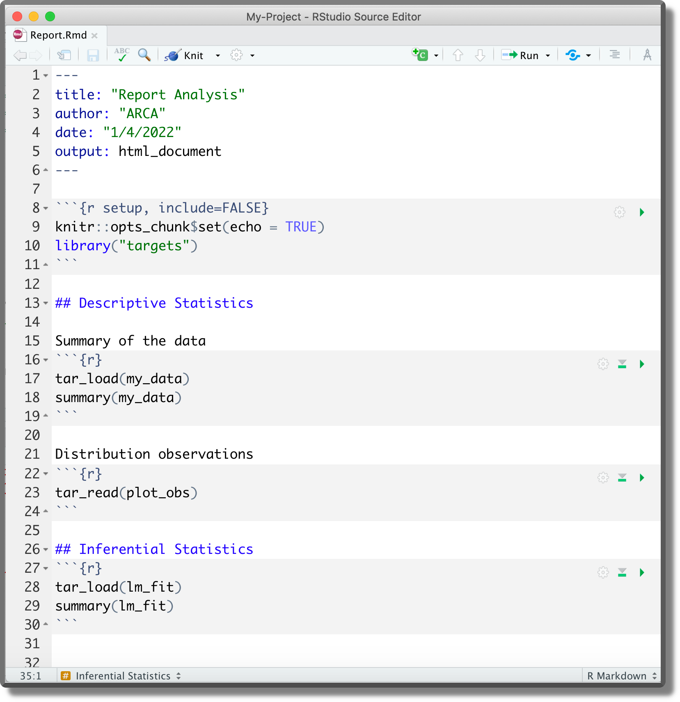
Next, we add it to the workflow pipeline,
#---- Targets-workflow.R ----#
...
list(
...
# Report
tarchetypes::tar_render(report, "documents/report.Rmd"),
...
)Now, targets will automatically recognize the dependencies our report is based on and will add the report to the workflow pipeline. Note that to allow dependency identification, targets have to be explicitly retrieved with targets::tar_read() or targets::tar_load().
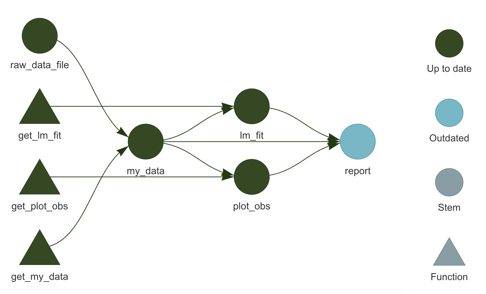
Running targets::tar_make(), we can update the pipeline compiling the report as well.
Alternatively, we can also compile the report outside the pipeline as usual by clicking the Knit button in RStudio. However, unless the report is in the root directory, we need to specify the position of the directory _targets/ (i.e., the directory with all the targets’ results and information) relative to the report position. To do that do not use the targets::tar_config_set() function as this would overwrite global settings for the whole targets workflow. Instead, create manually a _targets.yaml file in the same directory as the report specifying the store location. Considering the report in the example above, we would define
#---- documents/_targets.yaml ----#
main:
store: ../analysis/_targets/3.3.3.3 Reproducibility
targets enhance the reproducibility of the results by automatically running the pipeline in a reproducible background process. This procedure avoids that our current environment or other temporary settings affect the results.
Let’s discuss some other details relevant for results reproducibility:
- Random Number Generator. When running the pipeline, each target is built using a unique seed determined by the target’s name (no two targets share the same seed). In this way, each target runs with a reproducible seed and we always obtain the same results. See
targets::tar_meta()for a list of targets’ metadata including each target specific seed. See function documentation for further details. - Global Settings. Global settings are usually defined explicitly in the script used to specify the workflow pipeline (see Section 3.3.1.1). However, commands defined in the
.Rprofileare also evaluated when running the pipeline. This is not a problem for reproducibility but it may limit the code understanding of colleagues not familiar with more advanced features of R. To overcome this issue, note thattargetsruns the analysis in a non-interactive session. Therefore, we can avoid that the.Rprofilecode is evaluated following the suggestion described in “Trick-Box: Using .Rprofile”. - Project Requirements.
targetsdoes not track changes in the R or R-packages versions. To enhance reproducibility, it is good practice to use therenvpackage for package management (see Chapter ??).targetsandrenvcan be used together in the same project workflow without problems.
3.3.3.4 Branching
A very interesting feature of targets is branching. When defining the analysis pipeline, many targets may be obtained iteratively from very similar tasks. If we are already used to functional style, we will always aim to write concise code without repetitions. Here is where branching comes into play as it allows to define multiple targets concisely.
Conceptually branching is similar to the purr::map() function used to apply the same code over multiple elements. In targets there are two types of branching:
- Dynamic Branching. The new targets are defined dynamically while the pipeline is running. The number of new targets is not necessarily known in advance. Dynamic branching is better suited for creating a large number of very similar targets. For further details on dynamic branching, see https://books.ropensci.org/targets/dynamic.html.
- Static Branching. The new targets are defined in bulk before the pipeline starts. The exact number of new targets is known in advance and they can be visualized with
targets::tar_visnetwork(). Static branching is better suited for creating a small number of heterogeneous targets. For further details on static branching, see https://books.ropensci.org/targets/static.html.
Branching increases a little bit the pipeline complexity as it has its own specific code syntax. However, branching allows obtaining a more concise and easier to maintain and read pipeline (once familiar with the syntax).
3.3.3.5 High-Performance Computing
targets supports high-performance computing allowing us to run multiple tasks in parallel on our local machine or a computing cluster. To do that, targets integrates in its workflow the Clustermq (https://mschubert.github.io/clustermq) and the future (https://future.futureverse.org/) R packages.
In the case of large, computationally expensive projects, we can obtain valuable gains in performance by parallelizing our code execution. However, configuration details and instructions on how to integrate high-performance computing in the targets workflow are beyond the aim of this chapter. For further details on high-performance computing, see https://books.ropensci.org/targets/hpc.html.
3.3.3.6 Load All Targets
We have seen how targets’ results can be retrieved with targets::tar_read() or targets::tar_load(). However, it may be useful to have a function that allows us to load all required targets at once. To do that, we can define the following functions in a script named R/targets-utils.R.
#---- R/Targets-utils.R ----#
#---- load_glob_env ----
# Load targets in the global environment
load_glob_env <- function(..., store = targets::tar_config_get("store")){
targets::tar_load(..., envir = globalenv(), store = store)
}
#---- tar_load_all ----
# Load listed targets
tar_load_all <- function(store = targets::tar_config_get("store")){
targets <- c("my_data", "lm_fit", "plot_obs", "<other-targets>", "...")
# load
sapply(targets, load_glob_env, store = store)
return(cat("Tartgets loaded!\n"))
}Where:
load_glob_env()is used to load the targets directly in the global environment (otherwise targets would be loaded only in the function environment and we could not use them).
tar_load_all()is used to create a list of the targets of interest and subsequently load them into the global environment.
Now we can use the function tar_load_all() to directly load all specified targets. Note, however, that loading the targets in this way in an RMarkdown document would not allow targets to detect dependencies correctly.
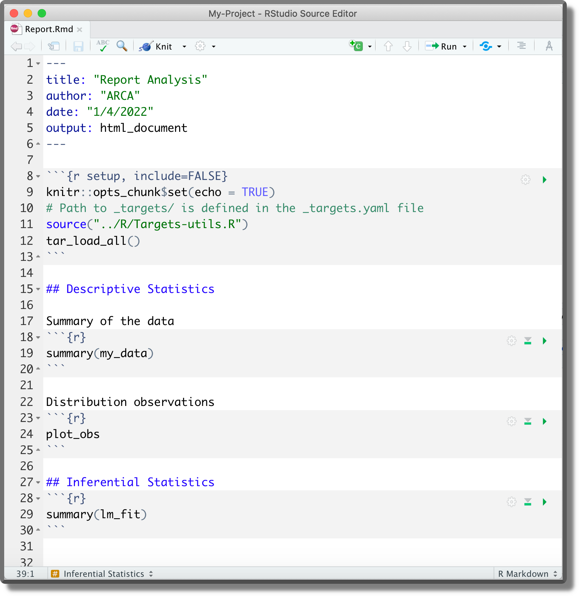
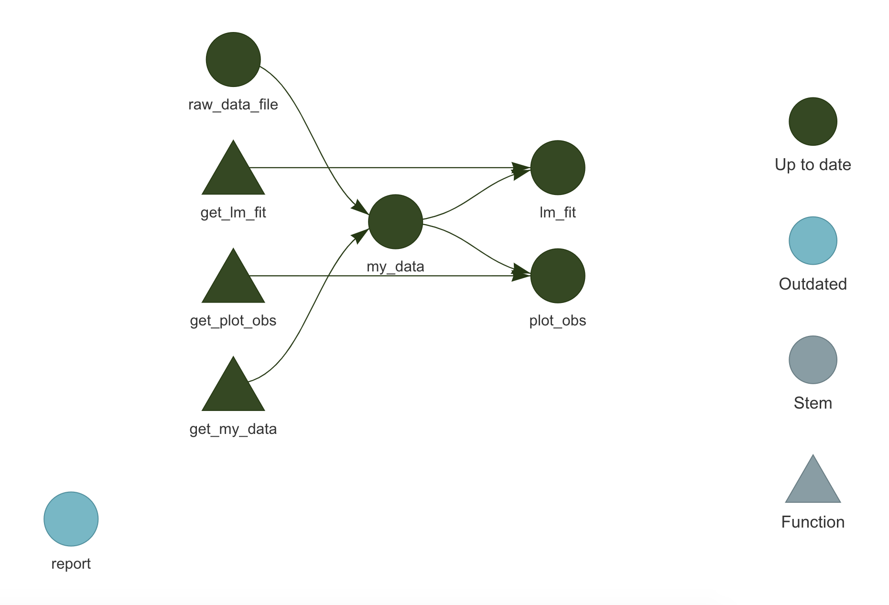
We could automatically load targets into the environment by including the function tar_load_all() in the .Rprofile.
#---- .Rprofile ----#
...
# Commands only for interactive sessions
if(interactive()){
...
# Load custom function
source("R/targets-utils.R")
# alternatively devtools::load_all()
# Load targets
tar_load_all()
...
}In this way, each time we restart the R session all targets are loaded in the environment and we can go back straight into the analysis development.
Make
- make official documentation
https://www.gnu.org/software/make/. - NMake
https://docs.microsoft.com/en-us/cpp/build/reference/nmake-reference - makefile
https://opensource.com/article/18/8/what-how-makefile
R
- Run R non-interactive
https://github.com/gastonstat/tutorial-R-noninteractive - DESCRIPTION load packages
https://r-pkgs.org/namespace.html?q=depends#imports conflictedR package
https://conflicted.r-lib.org/- Object Oriented
http://adv-r.had.co.nz/OO-essentials.html - workflowr R package
https://github.com/workflowr/workflowr
Targets
- Official documentation
https://books.ropensci.org/targets/ - Load packages
https://books.ropensci.org/targets/packages.html - Literate programming
https://books.ropensci.org/targets/files.html#literate-programming - Dynamic branching
https://books.ropensci.org/targets/dynamic.html - Static branching
https://books.ropensci.org/targets/static.html - High-performance computing
https://books.ropensci.org/targets/hpc.html